The Works of Larry Niven

A few days ago I mistakenly named Neal Stephenson as the author I'd read more of than any other. But I was forgetting about being young and inhaling books. On reflection, that title must surely belong to Larry Niven. As a teenager I read every last thing he did - or at least everything I could find in my hometown.
At one point my Mom picked up World Out of Time, to see what craziness her son was always buried in, and she concluded over the dinner table that I was reading it for the sex scenes she'd found. I presumably objected inarticulately that I was so little interested in Larry Niven's brief nerdy depictions of space sex that I'd barely even noticed they were there, but I have the impression she wasn't convinced. But it really was was his brand of hard science fiction that I was there for (I protest too much!) - revolving around ideas rather than character arcs, and the ruthless application of consistent world-views.
In inventing the Ringworld, Niven was inspired by Dyson spheres, first described by Olaf Stapledon, and popularized by Freeman Dyson. A full, solid Dyson sphere was, in some regards, inefficient. Dyson postulated miraculous gravity generators to make the inner surface of the sphere habitable. But this can be achieved much more feasibly by simply spinning the structure. However, all the matter inside the sphere, including any atmosphere, then pools at the equator. Niven observed that the superfluous surface of the sphere, away from the equator, can then be removed.
This vastly reduces the material needed to construct the megastructure. Given miraculous elemental transmutation, one could easily gather enough matter by recycling all the planets in a solar system as building material, even with a 1,000km "wall" along each edge to keep the fringes of the atmosphere in. Although this yields a much smaller habitable interior surface area than a full sphere, it's still something like a million times larger than planet Earth.
The aliens themselves weren't quite like any I've read before or since. The creepy sessile but sentient Grogs. The mysterious Outsiders, information brokers who are able to answer any question humanity has - if only we could afford the prices. The warlike, carnivorous Kzinti (picture a species of vicious feline Chewbaccas - surely the inspiration for Wing Commander's Kilrathi) forever attacking humanity before they were quite ready. You can't help but almost feel sorry for them. By the times of Ringworld, representatives such as Speaker to Animals (named for his shameful profession, interfacing with humans) are sufficiently adapted to working alongside humans to become formidable allies.
Perhaps Niven's greatest alien race was The Pierson's Puppeteers - like an ostrich with two necks, each topped with a single eye and dexterous mouth, while the brain resides safely in the body (pictured below, on the cover for Neutron star). The body plan makes so much sense in action. Mobile eyes mean they routinely view objects from both sides simultaneously, perfect for close-up detailed work, using the hand-like mouths. Or, spread the necks wide for amazing stereoscopic vision when distance estimation matters. And that gestural laugh - eyes turned inward to briefly gaze into one another, observing the self, no mirror required.
The psychology is also exquisite. Herbivores and herd-beasts, the Puppeteers are inveterate cowards. No human has ever met a sane one - only their more unstable individuals would venture out alone to run the risks of space travel and meeting alien species. However, they are very intelligent, more so than humans, and industrious, and manipulative. It becomes clear over the course of the books that Puppeteers have selectively bred the Kzinti into constructive docility by engineering the many human-kzin wars, and their plans for everyone else are scarcely less devious.
Finally, my personal favorite was always the Pak. As alien as could be, and yet they are us. On humanity's original homeworld, long before introduction to planet Earth, a symbiotic plant grows which young humans find uninteresting, but in middle-age they develop a compulsion to binge on it. It activates genes that provoke startling physiological and psychological changes, transforming the human from a breeder, into a protector - stronger, and with large joints for better leverage, with a tough wrinkled armour-like skin, much smarter, with a second heart, and ruthlessly dedicated to just one goal - protecting their own offspring. It is protectors who, it turns out many novels later, originally built the Ringworld. The absence of the transforming plant, which won't grow on Earth, means we grow without its benefits, leaving us with inadequate hearts, joints that fail with age, and an old-aged descent into feeble bodies and minds. Then, as the story begins, the first known interstellar spaceship shows up at Earth, piloted by one protector, come to rescue the failed colony, with a hold full of strange plant roots...
Wonders like these, from the novels and short stories set in his Known Space universe kept me up at night, and shaped the way I thought. Although Niven's writing had some mildly conservative tendencies, especially when under the influence of his militaristic writing partner Jerry Pournelle, it is also permeated with the necessity of a very liberal philosophy of non-judgemental tolerance of other lifestyles, both alien and human, a philosophy made explicit in one of Niven's Laws: "The only universal message in science fiction: There exist minds that think as well as you do, but differently."
It's clear I wasn't the only one spellbound. Niven's ideas have been influential throughout science fiction culture. Bank's Culture's Orbitals and the understandably much rarer full Rings are clear descendants, as is the eponymous megastructure/superweapon of the juggernaut Halo franchise, and countless other imitators. Niven's meticulous hard-SF approach to fantasy in The Magic Goes Away, and in particular his concept of the conservation of mana, was an influence on Magic: The Gathering, as acknowledged in the card Nevinyrral's Disk (Niven's name backwards), which uses magic to simultaneously accelerate it's own spin, and to hold itself together, thus rapidly using up all the mana in an area, rendering further magic unusable. Movies such as Wall-E throw in sly nods - the Axiom is labelled in a passing graphic as using a "General Dynamics Type Three Hull", which is a similar size and shape to Niven's "General Products Number Three Hull".
For years I remember toting Niven's various doorstop 500 page novels to one place or another, such as being forbidden from carrying one into the Houses of Parliament viewing gallery. All the better that they usually had these crazy great '70s covers, mostly by artist Peter Andrew Jones, from whom you can buy prints of some of them.
Collecting these today by Google image search, I see today that these funky covers are relatively rare - the vast majority of Niven's sales were of editions with far less interesting and less skillfully put together covers. So I think it's appropriate to collect and celebrate them here.
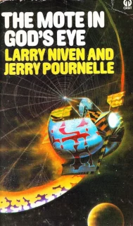
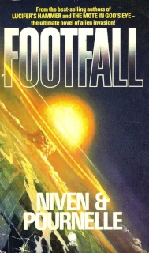

 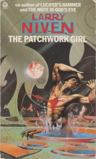
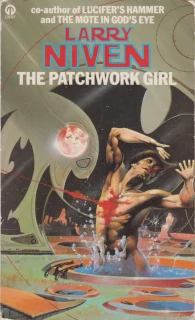

 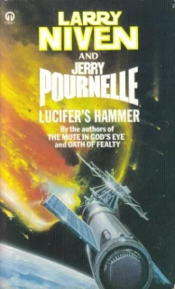
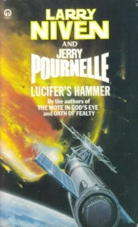


 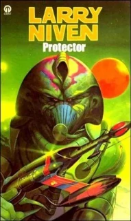
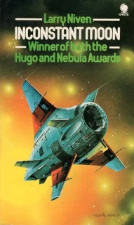
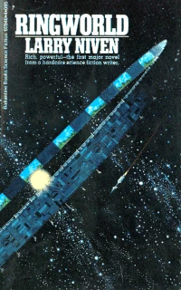
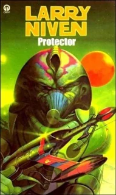
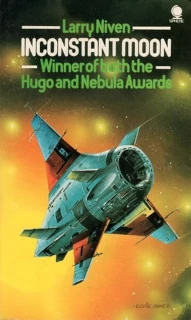
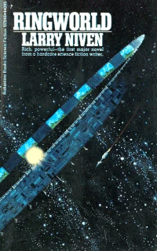
 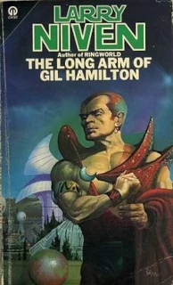
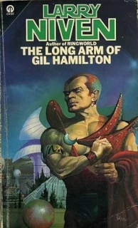


I've not even read half of what Niven wrote. By the '90s the crazy covers had been replaced by more conservative designs, and at the same time I drifted away to other things. At the time it felt more like Niven was drifting away from me, evolving in style over the years, losing something hard-to-characterize that I'd enjoyed, maybe just the rawness of his earlier works. Maybe his style was diluted through him writing so many books as partnerships, or, as I increasingly assumed, in an advisory role, lending his name to the cover for younger, less well-known authors, who did most of the work.
Looking back on it, with 30-or-so year's hindsight, there are also components of Niven's writing that are lacking, and I was slowly growing out of it. Hard SF often celebrates the elevation of ideas over characters, and while there is a value to that, particularly for those readers who are the most vulnerable to the sensation of wonder, it also needlessly shuns other aspects, like the emotional impact of character-driven drama or individual psychological epiphany. A more skilled writer, I now think, would have a broader range of tools to imbue the story with more emotional resonance and meaning.
Still, while the affair lasted, it was fabulous. Goodreads page counts indicates it was eleven thousand pages, beating my Neal Stephenson consumption by a clear thousand pages. Combining that with a very conservative estimate of the number of times I re-read each one, nearly twenty five thousand pages. What can I say, I was a teenager, with seemingly endless oceans of time.
The following are just his books that I've read. He has many others, especially many that are more recent than these.
| Title | Pages | Times read |
Effective pages |
|---|---|---|---|
| Rainbow Mars (1999) | 477 | 1 | 477 |
| Destiny's Road (1997) | 448 | 1 | 448 |
| The Ringworld Throne (1996) | 368 | 1 | 368 |
| Beowulf's Children (1995) | 512 | 2 | 1,024 |
| Flatlander (1995) | 369 | 1 | 369 |
| Crashlander (1994) | 281 | 1 | 281 |
| The Gripping Hand (1993) | 413 | 2 | 826 |
| The Barsoom Project (1989) | 352 | 1 | 352 |
| The Legacy of Heorot (1987) | 383 | 2 | 766 |
| The Smoke Ring (1987) | 323 | 2 | 646 |
| Footfall (1985) | 524 | 3 | 1,572 |
| The Integral Trees (1983) | 272 | 2 | 544 |
| Oath of Fealty (1981) | 324 | 2 | 648 |
| Dream Park (1981) | 448 | 3 | 1,344 |
| The Patchwork Girl (1980) | 205 | 2 | 410 |
| The Ringworld Engineers (1979) | 307 | 2 | 614 |
| Convergent Series (1979) | 227 | 2 | 454 |
| The Magic Goes Away (1978) | 212 | 5 | 1,060 |
| Lucifer's Hammer (1977) | 629 | 2 | 1,258 |
| A World Out of Time (1976) | 246 | 3 | 738 |
| Tales of Known Space (1975) | 240 | 5 | 1,200 |
| The Mote in God's Eye (1974) | 596 | 3 | 1,788 |
| A Hole in Space (1974) | 196 | 2 | 392 |
| The Flight of the Horse (1973) | 212 | 5 | 1,060 |
| Protector (1973) | 218 | 4 | 872 |
| Inconstant Moon (1971) | 200 | 4 | 800 |
| Ringworld (1970) | 228 | 2 | 456 |
| N-Space (1969) | 693 | 1 | 693 |
| The Long Arm of Gil Hamilton (1969) | 182 | 2 | 364 |
| All the Myriad Ways (1968) | 181 | 2 | 362 |
| A Gift from Earth (1968) | 256 | 3 | 768 |
| Neutron Star (1966) | 285 | 4 | 1,140 |
| The World of Ptavvs (1966) | 188 | 4 | 752 |
| totals | 10,995 | 24,842 |
(Discussion on Damien Walter's Science Fiction Facebook group)